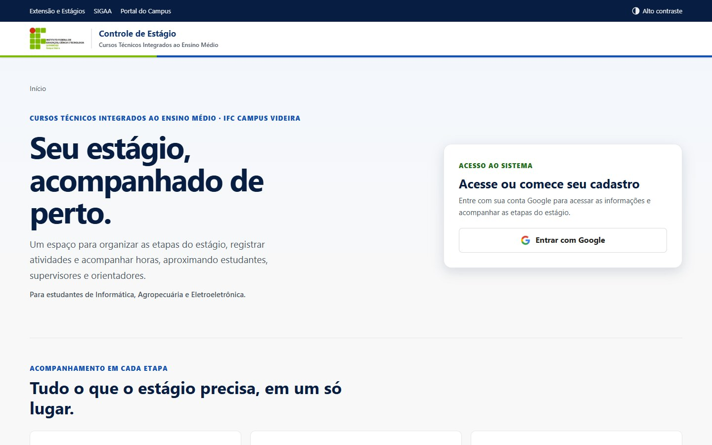
01Controle de EstágioSistema web
Fábrica de Software · IFC Videira
Sistema para acompanhar o estágio dos cursos técnicos integrados: registro de atividades e horas, fichas de avaliação e ata da banca em PDF.
Sistemas, sites, apps e trabalhos de aula que fiz ou de que participei.

Sistema para acompanhar o estágio dos cursos técnicos integrados: registro de atividades e horas, fichas de avaliação e ata da banca em PDF.
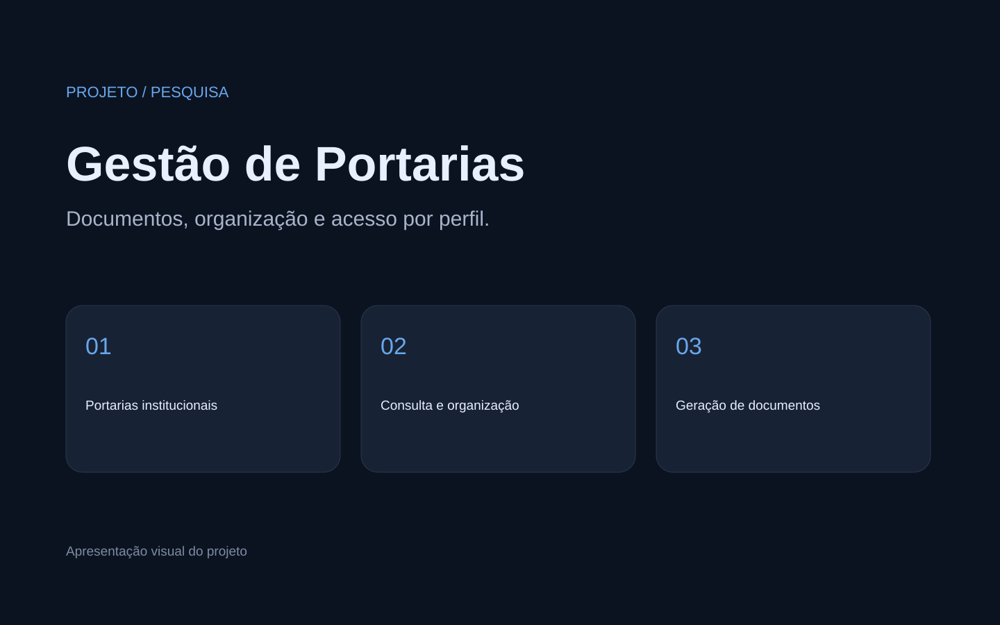
Aplicação web para cadastrar, consultar e gerar portarias institucionais, com acesso por perfil. Evolução de um protótipo feito em Google Sheets.
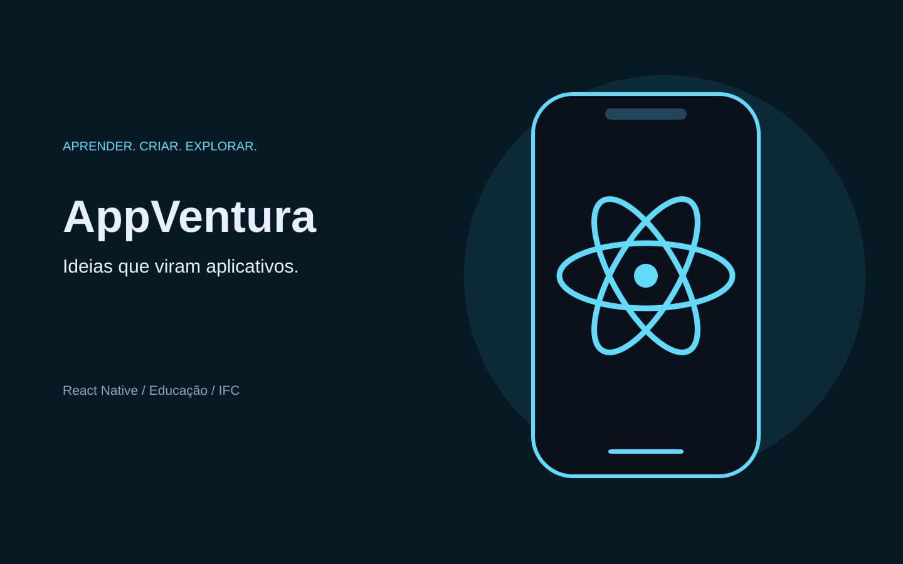
Oficinas de criação de aplicativos para o ensino fundamental, com temas transversais da BNCC. Atuei como bolsista em 2025, com coordenação do prof. Fabricio Bizotto.
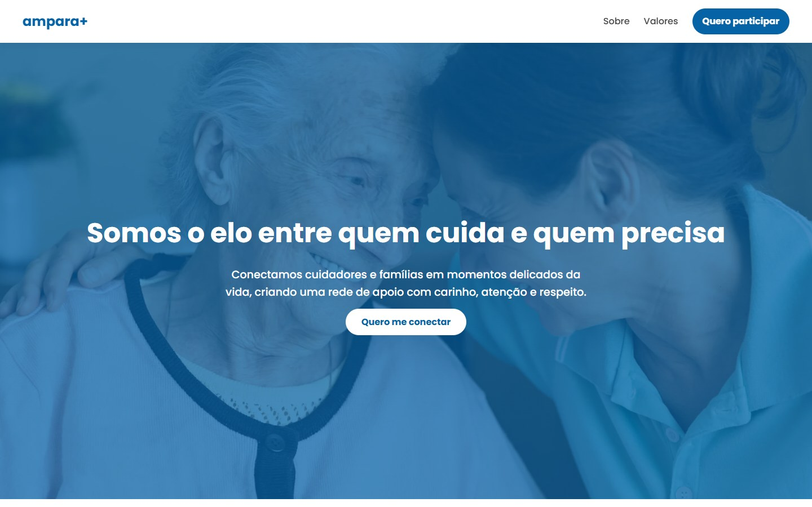
Landing page de uma startup que conecta quem cuida e quem precisa de cuidado.
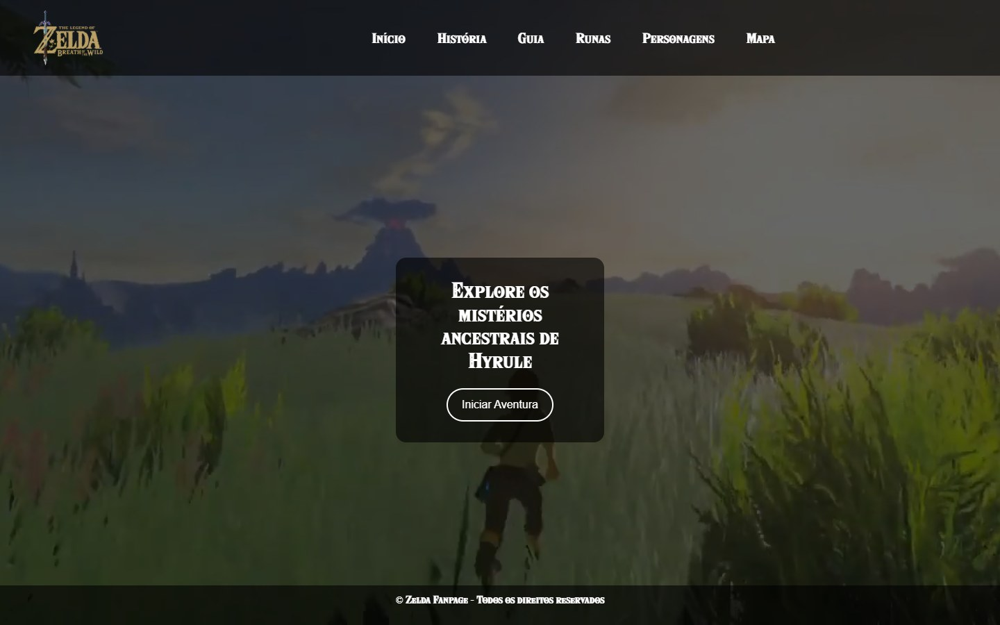
Landing page temática sobre o jogo, para treinar layout, tipografia e identidade visual.
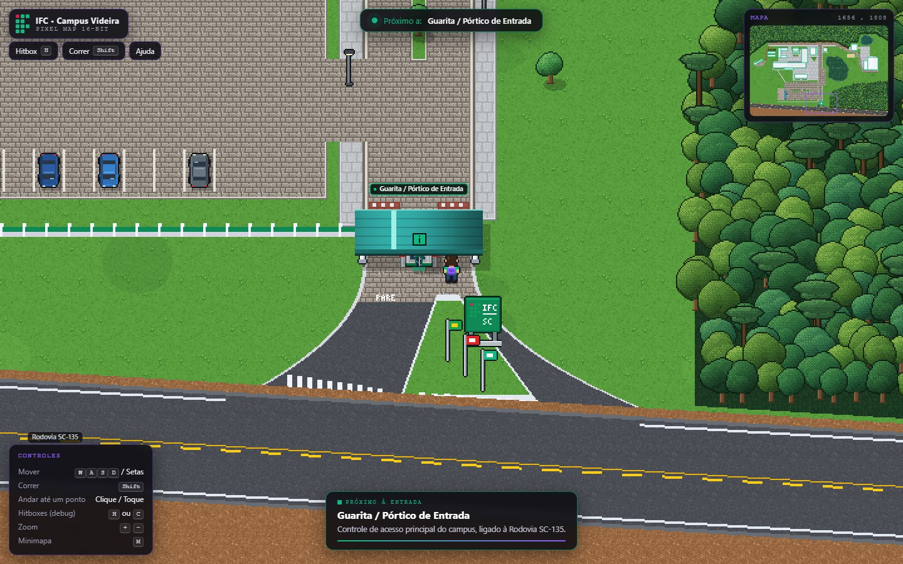
Mapa 2D em pixel art do campus de Videira, publicado no GitHub Pages.
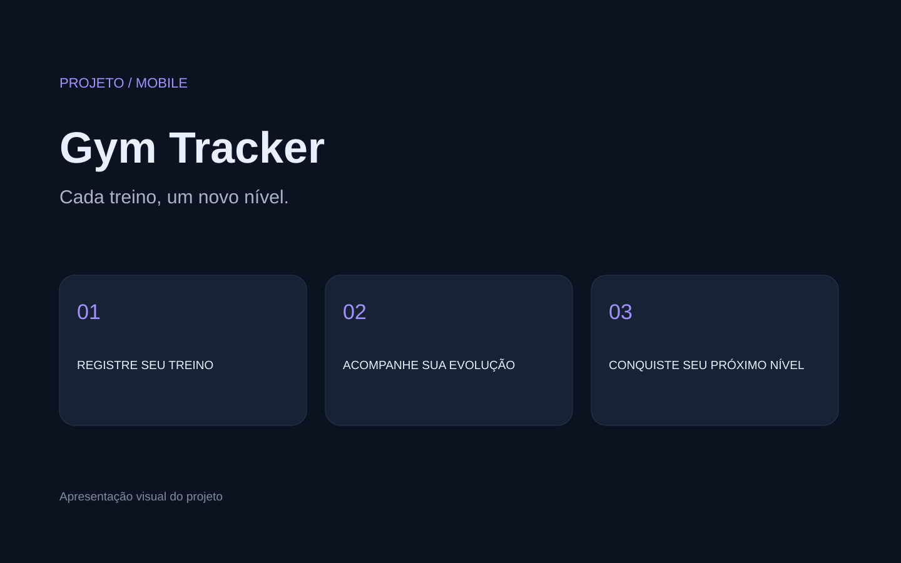
App offline para registrar treinos, com cronômetro de descanso e sistema de XP e nível por grupo muscular, no estilo Solo Leveling.
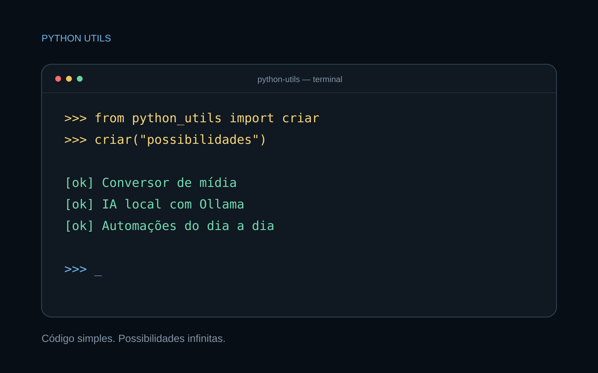
Coleção de utilitários em Python: conversor de mídia com Flask, mini ChatGPT local com Ollama e um relógio. Um laboratório de automação e IA.
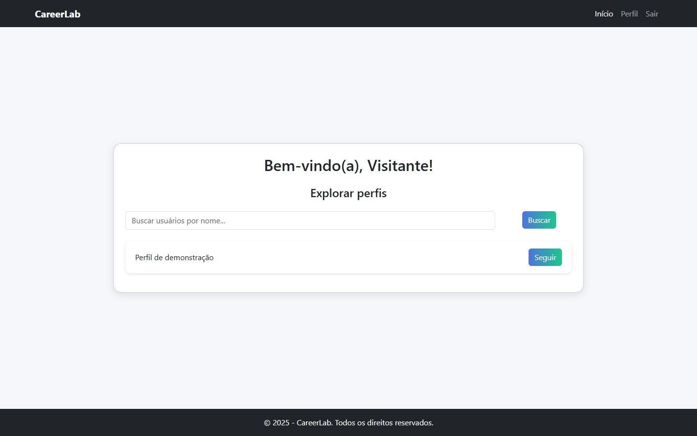
Rede de conexões e oportunidades de carreira, com cadastro, login, feed de postagens e sistema de seguidores. Feito em equipe com Ana Paula Deon e Rafael Zanelatto.
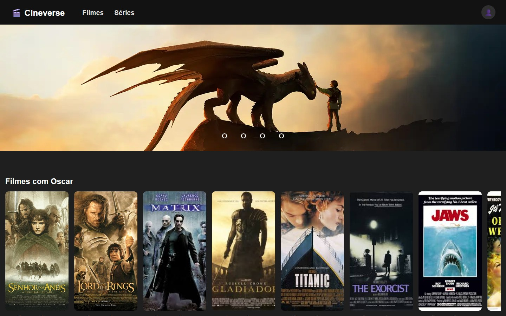
Site de catálogo de filmes e séries, com cadastro de usuários, perfil e slider de destaques.
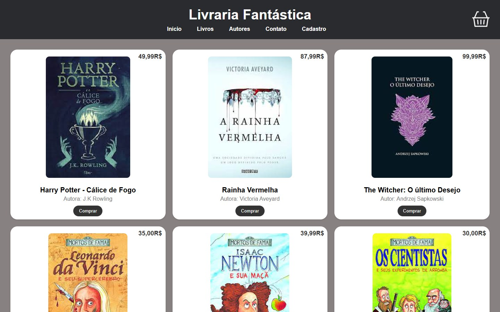
Trabalho final da disciplina: site de vendas de livros com página inicial e cadastro de clientes.